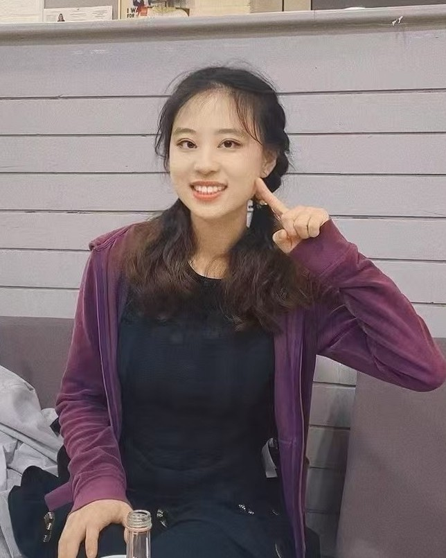
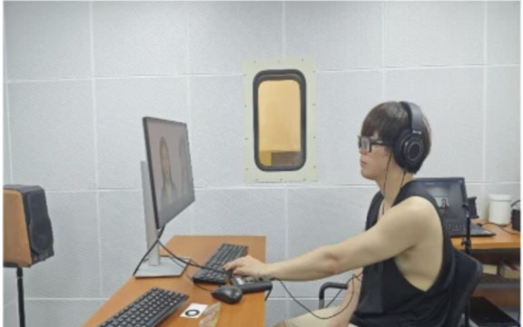
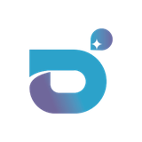
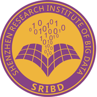
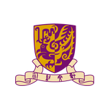

Xuanzhuo Liu刘萱卓
I teach robots to learn from their mistakes, and I make plenty of my own.
I am a first-year M.S. student in Electrical Engineering at Stanford University, advised by Chelsea Finn. I am interested in principled ways for robots to turn real-world experience into reliable improvement, and in scaling reinforcement learning toward general, transferable robot capabilities.
Before Stanford, I was a research intern at the AgiBot Embodied Research Center and at Microsoft Research Asia (blog highlight), and a research assistant at the Oxford Robotics Institute with Shimon Whiteson. I received my B.S. in Data Science from The Chinese University of Hong Kong, Shenzhen (ranked 1/315), including a visiting year in Mathematics and Computer Science at the University of Oxford.
I am always happy to chat! Feel free to reach out by email!
News
- Sep 2026Started my M.S. in Electrical Engineering at Stanford.
- Jun 2026Graduated from CUHK-Shenzhen with the Presidential Award for Outstanding Students.
- May 2026Joined the AgiBot Embodied Research Center in Shanghai as a research intern.
- Oct 2025Top-two finish worldwide at the IROS 2025 AgiBot Manipulation Challenge; received the Rising Tech Talent award.
- Jul 2025Joined the Machine Learning Group at Microsoft Research Asia as a Stars of Tomorrow intern.
- Oct 2024Our ICSR 2024 paper received the Best Student Paper Award.
- Oct 2024Began a visiting year at the University of Oxford (St Hilda's College).
Research
Selected papers and manuscripts.

Projects
Engineering-heavy work without a paper (yet).
Background



- Shenzhen Universiade International Scholarship2026 – 2028
- Presidential Award for Outstanding Students, CUHK-Shenzhenhighest honor for graduating students2026
- Outstanding Graduate Award, School of Data Science2026
- Microsoft Stars of Tomorrow, Microsoft Research Asia2025
- Rising Tech Talent, IROS AgiBot Manipulation Challenge2025
- Best Undergraduate Teaching Fellow, CUHK-Shenzhen2025
- Best Student Paper, ICSR2024
- Undergraduate Research Award, CUHK-Shenzhen2024
- Class A Academic Scholarship (top 1%), School of Data Science2024
- Diligentia Full-Tuition Scholarship2022 – 2025
- EE283 Markov Decision ProcessesAutumn 2026
- DDA3020 Machine LearningFall 2025
- MAT2041 Linear Algebra and Its ApplicationsFall 2024
- STA4001 Stochastic ProcessesSpring 2024
- CSC3100 Data Structures and AlgorithmsFall 2023
Talks & Media
-
Alumni interview on research and graduate applications, “Senior Talk” seriesAug 2026CUHK-Shenzhen Career Planning and Development Office · article (Chinese)
-
“From Afraid to Ask to Going Global,” invited talk for high-school studentsMay 2026Yinhu Mountain Forum, Mingde High School affiliated with CUHK-Shenzhen · article (Chinese)
-
Student speaker, CUHK-Shenzhen Media Spring GatheringMar 2026Speech on four years of growth at CUHK-Shenzhen, to about 100 journalists from national and regional media · article & video (Chinese)
-
Featured in Microsoft Research Asia’s Stars of Tomorrow profile series (No. 42)Mar 2026profile (Chinese)
Blog
Beyond Research
I have played piano and practiced Chinese classical dance for over fifteen years. I also love cooking and mountaineering, and I am learning Korean in my free time.